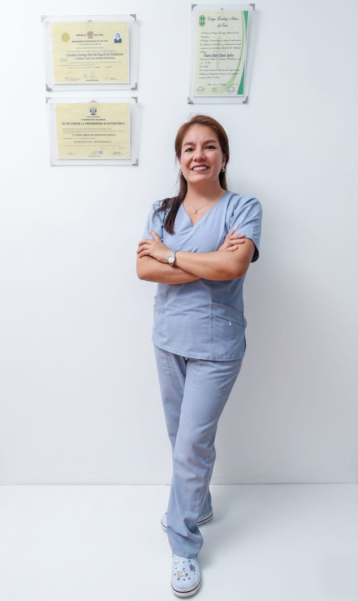

Terapia manual ortopédica
Movilización de articulaciones, masaje profundo y liberación miofascial para soltar contracturas y devolverte el movimiento que perdiste.
Para contracturas, dolor cervical y lumbagoFisioterapia para dolor de espalda, tendinitis y lesiones deportivas, con las manos y con la tecnología que hace falta: ondas de choque, ultrasonido, magneto y electroterapia en el mismo consultorio.

Casi todo lo que tratamos empieza con una frase simple. Elige la tuya y te llevo al tratamiento que le corresponde.
¿No aparece la tuya? Escribe al 979 000 480 y lo conversamos antes de que agendes.
Todos los tratamientos parten de la misma evaluación. Lo que cambia es la herramienta que mejor le sirve a tu caso.
Movilización de articulaciones, masaje profundo y liberación miofascial para soltar contracturas y devolverte el movimiento que perdiste.
Para contracturas, dolor cervical y lumbagoOndas de choque y ultrasonido sobre el tendón inflamado. Es la vía para los dolores tercos: hombro, codo de tenista, fascitis plantar y talón.
Para molestias de meses que no cedenReeducamos cómo te paras, te sientas y cargas peso, con ejercicios de estabilidad para que la espalda aguante tu día real.
Para trabajo de oficina y dolor recurrenteAtención a niños con retrasos del desarrollo motor o afecciones neuromotoras, con los padres presentes en cada sesión.
Para lactantes, niños y adolescentesEl puente entre "ya no me duele" y volver a competir: fuerza, potencia y gesto deportivo medidos antes de darte el alta.
Para rodilla, tobillo y hombroVamos a tu casa con el equipo necesario cuando salir todavía no es opción, sobre todo en postoperatorios y movilidad reducida.
Para postoperatorios y adultos mayoresCombinamos la terapia manual con equipamiento de vanguardia para acelerar tu recuperación, reducir el dolor y devolverte la movilidad. Ningún aparato reemplaza una buena evaluación, pero tener la herramienta correcta a mano acorta semanas de tratamiento.
Ondas sonoras de alta frecuencia que penetran en los tejidos profundos y generan un micromasaje con calor interno controlado.
Estimula la circulación sanguínea, reduce la inflamación en tendones y ligamentos, y acelera la reparación celular en lesiones musculares.
Ideal para tendinitis, esguinces, bursitis y contracturas profundas.
Campos magnéticos de alta o baja frecuencia sobre la zona afectada, que estimulan los procesos de regeneración a nivel celular.
Promueve la fijación de calcio en los huesos, disminuye el edema y tiene un potente efecto analgésico y antiinflamatorio. No se siente ninguna molestia durante la sesión.
Ideal para fracturas en consolidación, artrosis, osteoporosis, edemas óseos y dolor articular crónico.
Corrientes eléctricas terapéuticas (TENS, EMS o interferenciales) aplicadas mediante electrodos colocados sobre la piel.
Modula las señales de dolor que llegan al cerebro y estimula o reeduca las fibras musculares debilitadas tras una lesión o una cirugía.
Ideal para dolor agudo o crónico, fortalecimiento muscular postoperatorio y relajación de espasmos.
Ondas acústicas de alta energía que penetran en el tejido dañado y reactivan los procesos naturales de curación del organismo.
Rompe calcificaciones, desintegra el tejido cicatricial adherido, estimula la producción de colágeno y regenera tendones con inflamación crónica.
Ideal para espolón calcáneo, fascitis plantar, codo de tenista y tendinopatías que no ceden.
Masaje mecánico focalizado que aplica ráfagas rápidas y profundas de presión sobre el tejido muscular.
Aumenta el flujo sanguíneo de forma inmediata, desactiva los puntos gatillo (los nudos musculares), mejora la flexibilidad y acelera la recuperación tras el ejercicio.
Ideal para sobrecargas musculares, liberación miofascial, preparación deportiva y contracturas por estrés.
Compresas calientes y frías: los agentes térmicos que regulan la respuesta inflamatoria y la circulación en cada etapa de la lesión.
Calor. Calor húmedo penetrante que dilata los vasos sanguíneos, relaja la musculatura y reduce la rigidez articular. Indicado en dolores crónicos y rigidez.
Frío. Produce vasoconstricción local para adormecer la zona, contener la inflamación y reducir la formación de hematomas. Indicado en lesiones agudas, durante las primeras 48 a 72 horas.
Nada de sesiones indefinidas. Desde el primer día tienes una cantidad estimada y un criterio claro de alta.
Revisamos tu historia, medimos movilidad y fuerza, y buscamos el origen del dolor, no sólo el lugar donde lo sientes. Te vas sabiendo qué tienes.
Terapia manual para bajar el dolor y ejercicio progresivo para que el resultado se quede. Ajustamos el plan cada dos semanas según cómo respondes.
Te vas con una rutina corta que ya practicaste conmigo, y volvemos a medir para confirmar que el avance se mantuvo.
Si vienes por primera vez, esa es la referencia que no falla. El consultorio queda en la misma cuadra.
Referencia: a la altura del restaurante El Verídico.
Atención con cita previa. También vamos a domicilio dentro de la ciudad.
El paciente entra encogido, con la mano puesta sobre el hombro, y repite la frase que aquí se escucha casi todos los días: me duele hace meses y ya probé de todo. Lo primero que pasa entonces no es un aparato encendido ni una camilla. Es una pregunta: ¿desde cuándo, y qué estabas haciendo cuando empezó?
Han pasado diez años desde que PhyReh empezó a atender a la altura del restaurante El Verídico. En ese tiempo por la camilla han pasado albañiles con la espalda vencida, choferes con el cuello endurecido de tanto volante, futbolistas de cancha de barrio con la rodilla hinchada y señoras que volvieron a colgar la ropa sin quejarse. La historia clínica cambia en cada caso. El método, no.
El método empieza midiendo. Cuánto sube el brazo, cuánto gira el cuello, en qué punto exacto se corta el movimiento y dónde aparece la molestia. Solo después de eso se decide la herramienta, porque tratar sin medir es apostar.
Las herramientas, además, están todas en la misma sala. El ultrasonido llega al tejido profundo donde la mano ya no alcanza. La magnetoterapia baja la inflamación que se quedó a vivir en la articulación. La electroterapia despierta al músculo que se durmió después de la lesión. Las ondas de choque se reservan para el tendón que lleva medio año sin ceder. La pistola de percusión suelta en minutos la contractura que se resiste. Y las compresas, frías o calientes según el caso, siguen siendo después de todos estos años de lo más eficaz del arsenal.
La mayoría de los pacientes se va de la primera sesión notando la diferencia: el brazo sube un poco más, el cuello gira sin ese tirón, el dolor baja de intensidad. No es magia ni es una promesa de cura. Es lo que ocurre cuando se trata el origen del problema y no solamente el punto donde duele. Lo que sí toma tiempo es que ese alivio se quede, y para eso están las sesiones que siguen y los ejercicios que cada paciente se lleva a casa.
En la pared del consultorio cuelgan los títulos y las certificaciones, pero la herramienta principal no está enchufada ni enmarcada: aquí nadie se baja de la camilla sin entender qué tiene y por qué.
Devolver funcionalidad y calidad de vida con tratamientos personalizados, basados en evidencia y con calidez humana, promoviendo el movimiento consciente y la prevención de lesiones.
Ser un referente regional en fisioterapia, integrando tecnología y terapia manual para construir una comunidad activa y sin dolor, liderando con excelencia y empatía.
No para la evaluación inicial. Si tu seguro exige orden para reembolsar las sesiones, te digo exactamente qué pedirle a tu médico.
La primera dura 45 minutos porque incluye la evaluación completa. Las siguientes son de 40 minutos, siempre uno a uno.
La electroterapia se siente como un hormigueo. Las ondas de choque sí molestan mientras se aplican y pueden dejar la zona sensible un día. Nunca se trabaja sobre dolor intenso: acordamos un límite antes de empezar y se respeta.
La mayoría de pacientes sale notando un cambio concreto: más rango de movimiento y menos intensidad de dolor. Eso no equivale a estar curado. El alivio inicial es la señal de que el tratamiento va por buen camino; consolidarlo toma las sesiones siguientes.
Lo más común es entre 4 y 8. Al terminar la evaluación recibes un número estimado; si a la tercera sesión no hay cambios medibles, se replantea el tratamiento o se te deriva.
Sí, dentro de la ciudad, con equipo portátil. Es la opción habitual para postoperatorios, adultos mayores y pacientes que todavía no pueden trasladarse. Se coordina por WhatsApp según disponibilidad.
Ropa cómoda que te permita moverte y cualquier examen o informe que tengas a la mano: radiografías, resonancias, ecografías o el informe de tu operación.
Escribe, cuéntame qué te duele y desde cuándo, y agendamos la evaluación. Sales de la primera cita sabiendo qué tienes y cuántas sesiones necesitas.